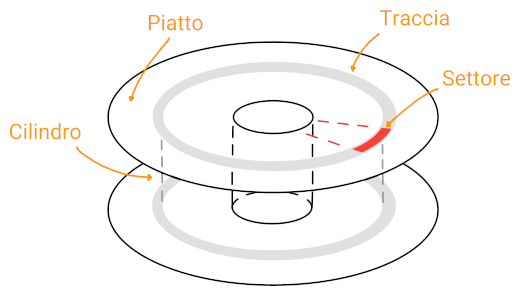

Dischi
Una tecnica molto usata per la comunicazione con i controller delle unità esterne è il memory mapped I/O.
Anche se esclude l'uso della cache, dato che verrebbe invalidata senza che la CPU lo sappia, semplifica lo sviluppo dei driver con linguaggi ad alto livello, avendo accesso alla memoria, e la protezione su gli indirizzi.
La parte del S.O. volta alla gestione dell'I/O è suddivisa in livelli,
![]()
dove l'interfaccia indipendente verso l'utente ha come obbiettivo astrarre operazioni come allocazione e rilascio delle risorse, buffering (che può avvenire sia a livello kernel che utente) e segnalazione degli errori.
La gestione delle richieste dipende dal metodo utilizzato, ovvero con polling, interrupt o DMA.
Struttura
Un disco è composto da più piatti magnetici, ognuno dei quali contiene più tracce che verticalmente formano dei cilindri su cui si allineeranno le testine, che poi procederanno alla lettura di un settore.
Ogni settore contiene un preambolo, i dati e un error correcting code (ECC) per rimediare a errori di lettura. Inoltre, se un settore diventa difettoso il disco può mapparlo su un settore di riserva.

Le prestazioni di lettura e scrittura sono direttamente influenzate da:
- tempo di ricerca (o seek), ovvero quanto la testina ci mette a muoversi su un altro cilindro
- latenza rotazionale, cioè il tempo di rotazione del disco perchè il giusto settore arrivi alla testina
- tempo di trasferimento, cioè quanto ci mettono i settori ad essere letti
Durante lo spostamento della testina da un cilindro ad un altro il disco ruota, portandola su un altro settore. Questo è risolvibile con il cylinder skew, cioè il posizionamento dei settori a spirale verso l'esterno.
Inoltre, nel tempo che passa da una lettura alla successiva, il disco potrebbe aver saltato il settore richiesto. Di conseguenza, i settori possono anche essere disposti a interleaving, cioè consecutivi ogni due o più.
RAID
Attraverso il RAID (Redundant array of independent disks) il S.O. vede più unità come un unico disco, cosa che permette la ridondanza dei dati e migliori prestazioni per l'accesso parallelo ai dati distribuiti sui dischi.
Ogni livello RAID è ottimizzato per una situazione specifica, e viene detto in stripe quando i dischi sono uniti senza copie presenti, e in mirror se i dischi sono solamente copiati:
- Livello 0: solo striping
- Livello 1: solo mirroring, quindi metà dei dischi contiene la copia dell'altra metà
- Livello 5: striping con blocchi di parità sparsi su tutti i dischi
- Livello 6: come il livello 5 ma con il doppio dei blocchi di parità
- Livello 1+0: striping di più gruppi di dischi ognuno formato da dischi in mirroring
Scheduling
Tra gli algoritmi che cercano di minimizzare i tempi di risposta e massimizzare il throughput, ci sono:
-
First Come First Serve (FCFS)
Tratta le richieste sequenzialmente in ordine di arrivo.
Riduce l'overhead ma porta ad un throughput molto basso per via dei continui seek.
-
Shortest Seek Time First (SSTF)
Tratta per prime le richieste che portano ad un minor tempo di ricerca.
Anche se migliora il throughput, i tempi di risposta diventano molto variabili e permette l'attesa infinita.
-
SCAN
Come SSTF ma, come un ascensore, non cambia direzione fino a quando non arriva alla fine del disco.
Diminuisce la varianza dei tempi di risposta ma permette comunque l'attesa infinita.
-
C-SCAN
Come SCAN, ma invece di invertire la direzione salta direttamente al primo cilindro da cui era partito.
-
FSCAN
Come SCAN, ma pospone le richieste in arrivo e tratta solo le ultime ricevute fino al cambio direzione.
Riduce la varianza dei tempi di risposta e previene l'attesa infinita.
-
N-Step SCAN
Come FSCAN, ma su ogni turno processa al più richieste e pospone le altre.
-
LOOK
Come SCAN, ma cambia direzione quando raggiunge l'ultima richiesta nel verso percorso.
Migliora il throughput evitando operazioni di ricerca inutili.
-
C-LOOK
Combina LOOK e C-SCAN, saltando al lato opposto al raggiungimento dell'ultima richiesta.
Riduce la varianza dei tempi di risposta di LOOK ma peggiora il throughput.
Inoltre, algoritmi più moderni cercano anche di ottimizzare la latenza rotazionale, tra cui:
-
Shortest Latency Time First (SLTF)
Tratta per prime le richieste che portano ad una minor latenza di rotazione.
Facilita l'implementazione perchè la testina leggerà i settori in ordine sul disco, evitando attese infinite.
-
Shortest Positioning Time First (SPTF)
Tratta prima le richieste con minor tempo di posizionamento, cioè il tempo per la ricerca e rotazione.
Rischia l'attesa infinita, perchè tenderà a restare sul centro arrivando raramente ai cilindri sui bordi.
-
Shortest Access Time First (SATF)
Come SPTF, ma conta anche il tempo di trasmissione.
Permette throughput elevato, ma rischia comunque l'attesa infinita.
Altre tecniche sfruttano molteplici copie dei dati per velocizzare il tempo di ricerca, compressione per velocizzare il tempo di trasferimento e previsione della posizione della prossima lettura nei periodi inattivi.